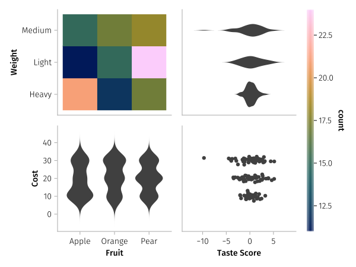

Split scales across facets

Usually, facet layout plots use the same scale for all x and y axes, respectively, of every facet. Sometimes you might want to break with this convention, for example, to show how different categorical and continuous variables interact with each other.
AlgebraOfGraphics allows you to use multiple different scale ids for the X and Y aesthetics in a plot, as long as only one scale id for x and y axis, respectively, appears in a given facet.
Currently, this scenario requires building the plot in multiple separate layers rather than using wide input data with the dims selector for layout, row or col mappings. You need one layer for each set of scale ids. Multiple facets are allowed to share scale ids, but a single facet may not have multiple scale ids for x or y, respectively.
using AlgebraOfGraphics, CairoMakie
dat = data((;
fruit = rand(["Apple", "Orange", "Pear"], 150),
taste = randn(150) .* repeat(1:3, inner = 50),
weight = repeat(["Heavy", "Light", "Medium"], inner = 50),
cost = randn(150) .+ repeat([10, 20, 30], inner = 50),
))
fruit = :fruit => "Fruit" => scale(:X1)
weights = :weight => "Weight" => scale(:Y1)
taste = :taste => "Taste Score" => scale(:X2)
cost = :cost => "Cost" => scale(:Y2)
layer1 = mapping(
fruit,
weights,
col = direct("col1"), # this controls what facet this mapping belongs to
row = direct("row1")
) * frequency()
layer2 = mapping(
fruit,
cost,
col = direct("col1"),
row = direct("row2")
) * visual(Violin)
layer3 = mapping(
weights, # note X and Y are flipped here for a horizontal violin
taste,
col = direct("col2"),
row = direct("row1")
) * visual(Violin, orientation = :horizontal)
layer4 = mapping(
taste,
cost,
col = direct("col2"),
row = direct("row2")
) * visual(Scatter)
spec = dat * (layer1 + layer2 + layer3 + layer4)
fg = draw(spec, scales(Row = (; show_labels = false), Col = (; show_labels = false)))
This page was generated using DemoCards.jl and Literate.jl.